The brain. These are the same figures as in your Class Notes, in the same order. If a figure in your notes shows as a gray box, use this page instead.
Slide 6. Nobody Watches a Thought Happen
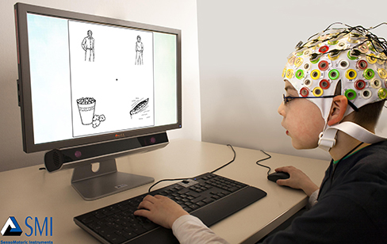
OpenStax, Psychology 2e, Figure 3.29, CC BY 4.0, credit: SMI Eye Tracking
Slide 9. The Brainstem and the Medulla
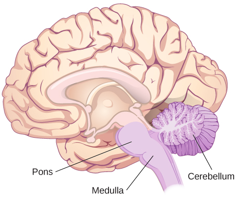
OpenStax, Psychology 2e, Figure 3.25, CC BY 4.0
Slide 10. Alertness and Reward
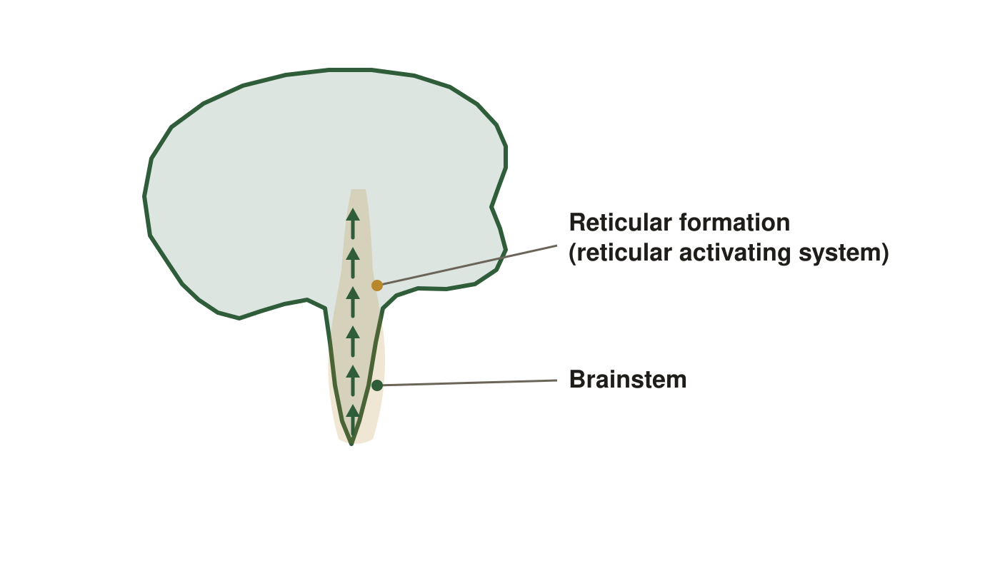
A schematic, not anatomy. The reticular formation sits inside the brainstem and projects upward in every direction rather than to one place.
Slide 12. Two Hemispheres, One Cortex
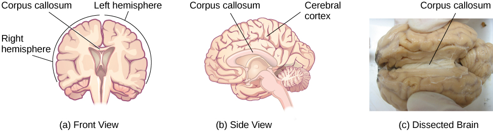
Read panel (a): the left and right hemispheres, joined by the corpus callosum. Panels (b) and (c) show the same band from the side and in a dissected brain. OpenStax, Psychology 2e, Figure 3.16, CC BY 4.0. Credit (c): modification of work by Aaron Bornstein.
Slide 14. The Limbic System (continued)
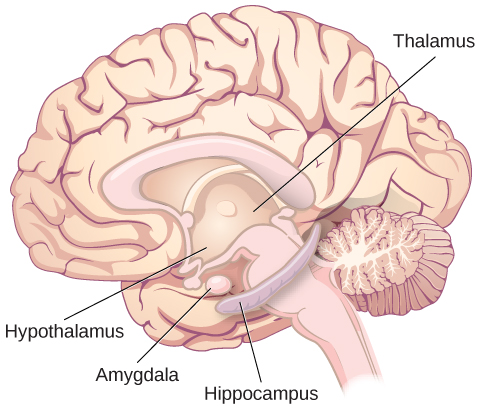
Four of the five located: thalamus, hypothalamus, amygdala, hippocampus. The pituitary is not shown, so it stays a spoken structure. OpenStax, Psychology 2e, Figure 10.22, CC BY 4.0
Slide 15. The Four Lobes
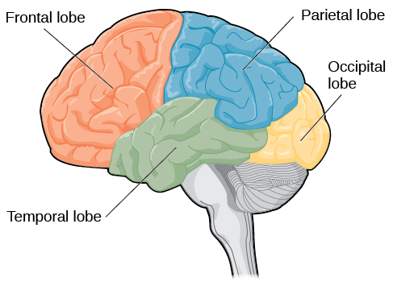
OpenStax, Psychology 2e, Figure 3.18, CC BY 4.0
Slide 16. The Frontal Lobe, as Reported
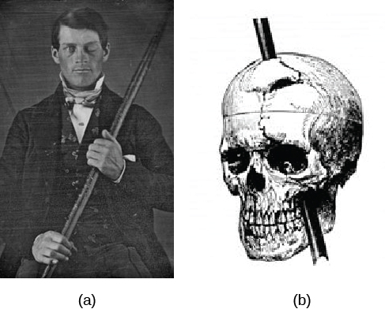
The rod entered below Gage's left eye and exited through the top of his skull, damaging the frontal lobe. OpenStax, Psychology 2e, Figure 3.19, CC BY 4.0; credit a: modification of work by Jack and Beverly Wilgus
Slide 20. How It Was Designed
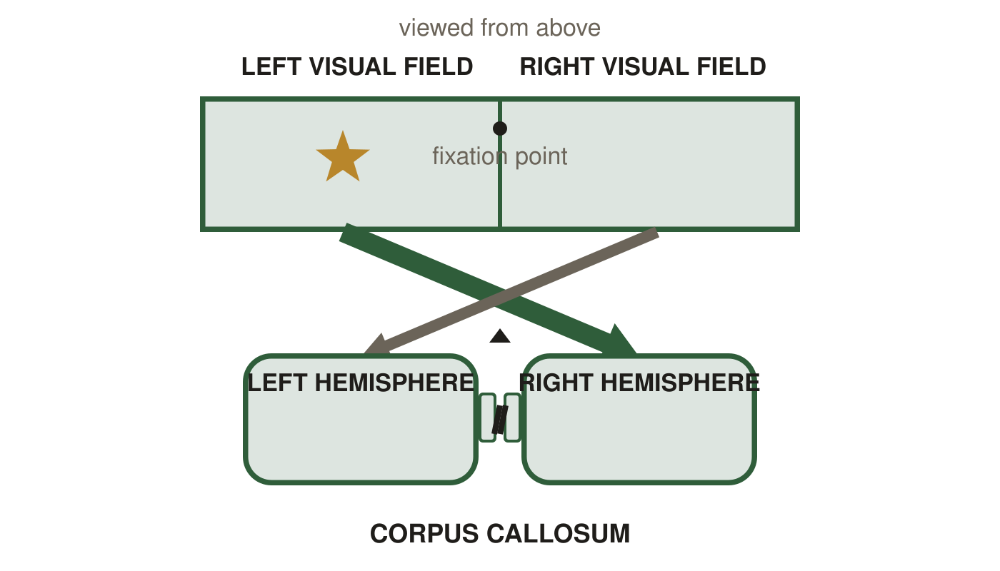
These patients have had the corpus callosum cut, so this is not ordinary anatomy. Each visual field crosses to the opposite hemisphere, which is why what is flashed to the left field reaches the right hemisphere and stops there.
Slide 27. When the Brain Is Damaged
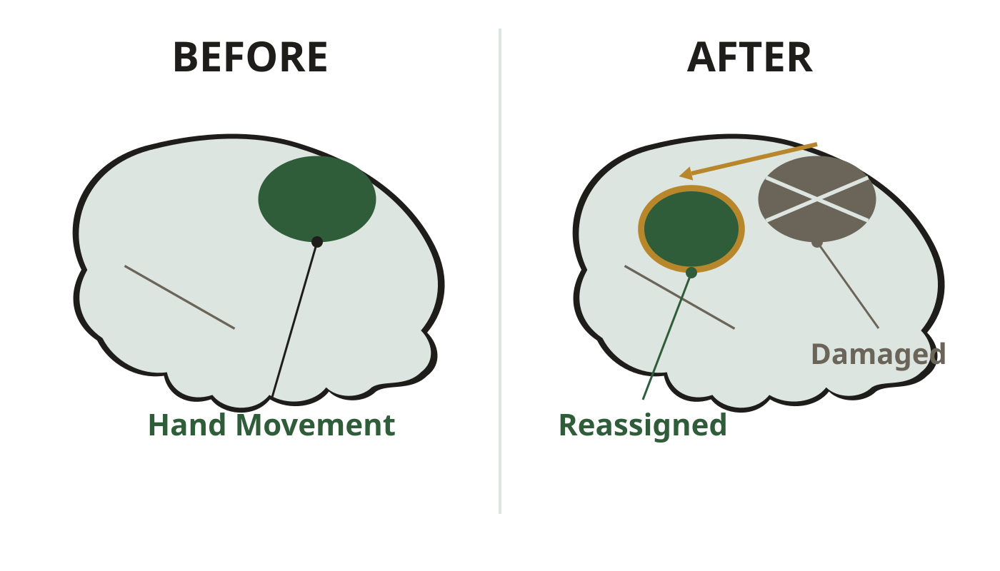
After injury to the original hand-movement site (gray, damaged), the job is reassigned to healthy tissue beside it (green). The arrow runs from the lost site to the tissue that takes over.
Slide 30. What Split-Brain Research Showed
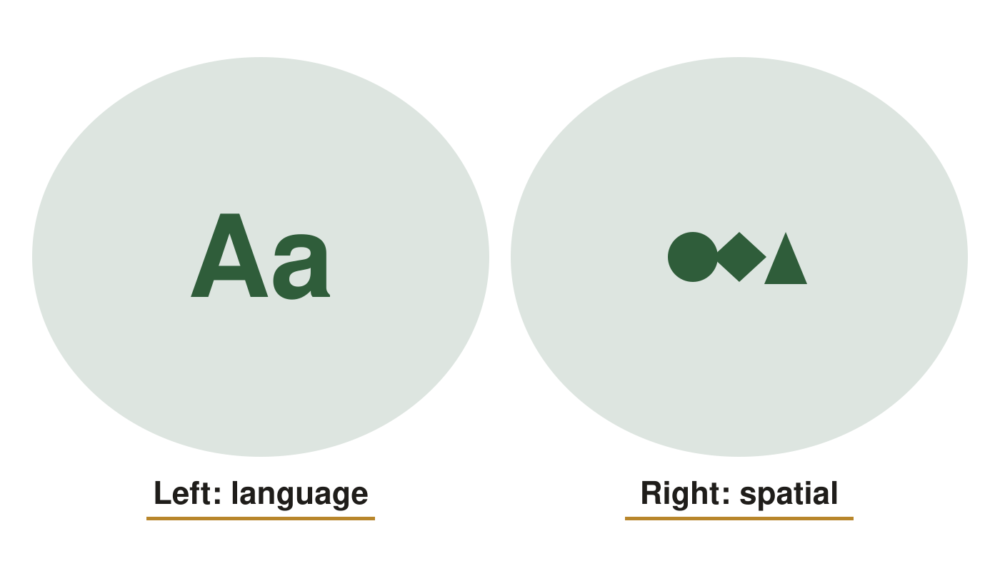
A schematic of tendencies, not two separate brains. In anyone whose corpus callosum is intact the two sides are in contact constantly.
Slide 33. Broca's Area and Wernicke's Area
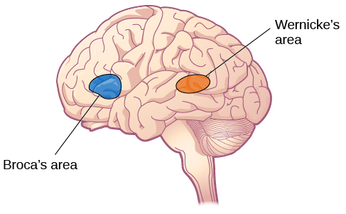
In most people both areas sit in the left hemisphere: Broca's area in the frontal lobe, Wernicke's area in the temporal lobe. OpenStax, Psychology 2e, Figure 3.21, CC BY 4.0
Slide 38. Mapping the Body onto the Brain
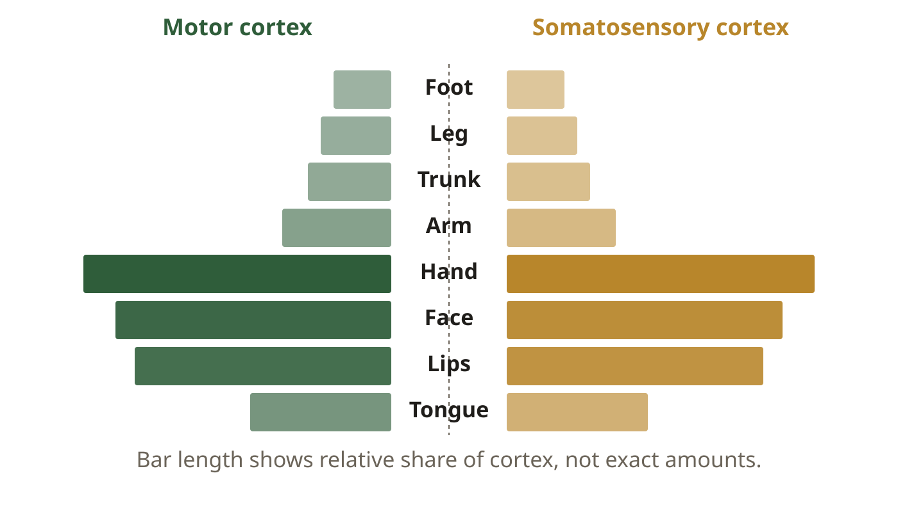
The bars are a relative comparison, as the line under the chart says: which body parts get more cortex, never how much of it.